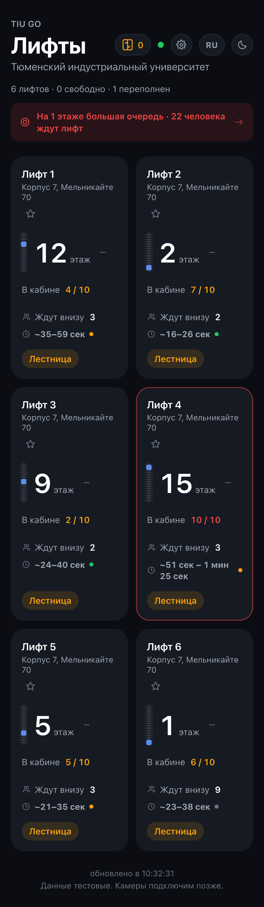
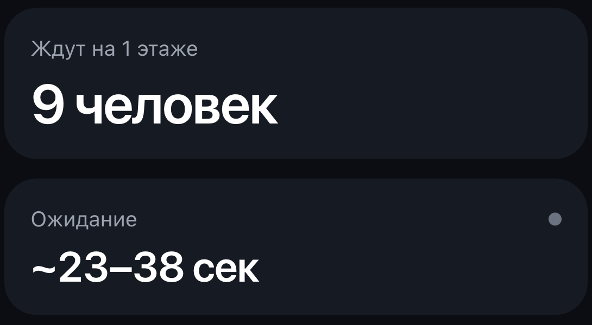
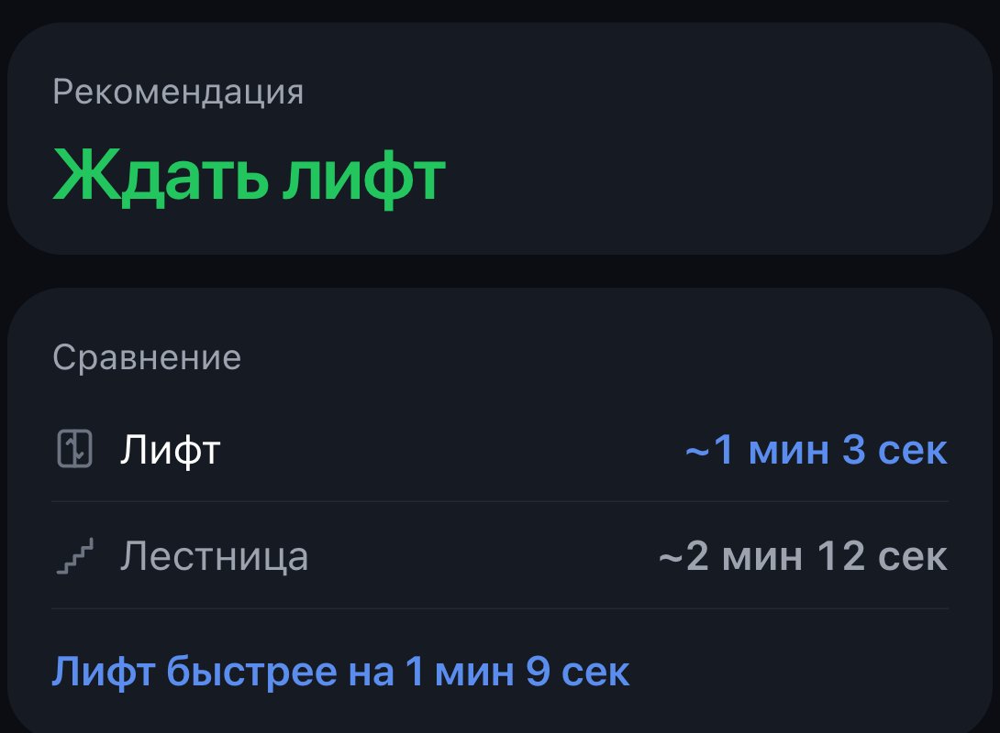

Корпус 7, Мельникайте 70
Шестнадцать этажей
И очередь внизу

TIU GO
Мониторинг лифтов · Telegram и MAX
Все шесть лифтов на одном экране
Один общий фронтенд, два независимых бота

Очередь на первом этаже — по каждому лифту
Прогноз ожидания идёт диапазоном, а не одним числом


Онлайн-камера · Холл, 1 этаж
ИИ подсвечивает рамками ожидающих людей
Ждать лифт
Иди по лестнице

Проверено на модели
500 прогонов учебного дня
+11,9 %
пропускная способность в пик
−19,8 %
среднее ожидание
588 → 13
бесполезных остановок за день
TIU GO
Ждать или идти по лестнице
Корпус 7, Мельникайте 70 · Telegram и MAX